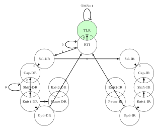
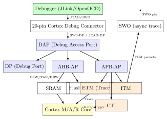

Chapter 17: JTAG and Debug Interface Security¶
Note: JTAG (IEEE 1149.1) was designed in 1985 for PCB-level manufacturing test and has become the primary debug interface for embedded systems. It also represents one of the highest-value hardware attack vectors: a single 4-wire JTAG connection can provide complete memory dump, live debugging, and firmware replacement capabilities on any unprotected device.
17.1 JTAG Architecture – IEEE 1149.1¶
JTAG (Joint Test Action Group, IEEE Std 1149.1-2013) defines the Test Access Port (TAP) interface for boundary scan and debug. The four mandatory signals are:
-
TCK (Test Clock): Serial clock, typically 1–40 MHz. Data sampled on rising edge, shifted on falling edge (TDI) or rising edge (TDO), mode changes on rising edge (TMS).
-
TMS (Test Mode Select): Controls TAP state machine transitions. Sampled on rising edge of TCK.
-
TDI (Test Data In): Serial data input to the selected register (IR or DR).
-
TDO (Test Data Out): Serial data output from the selected register. High-impedance when not shifting.
-
TRST# (Test Reset, optional): Asynchronous reset of TAP state machine to Test-Logic-Reset state. Equivalent to holding TMS=1 for 5+ TCK cycles.
17.2 TAP State Machine¶
The JTAG TAP controller is a 16-state Mealy machine. TMS input on rising TCK edge drives transitions. All states are deterministically reachable from any state.
Key states:
-
Test-Logic-Reset (TLR): Entry state. All registers reset. TMS=1 for 5 TCK cycles from any state reaches TLR.
-
Run-Test/Idle (RTI): Idle loop. TMS=0 stays in RTI. Used for execution delay in some architectures.
-
Select-DR-Scan: Branch to Capture-DR (TMS=0) or Select-IR-Scan (TMS=1).
-
Capture-DR: Load parallel input into selected Data Register on rising TCK.
-
Shift-DR: Shift data through selected DR. TDI shifted in MSB-first, TDO shifts out.
-
Update-DR: Latch shifted DR value into parallel output register on falling TCK.
-
Capture-IR: Load IR with fixed test pattern (typically ...01). Allows IR length detection.
-
Shift-IR: Shift new instruction into IR. Last bit clocked while exiting at Exit1-IR.
-
Update-IR: Latch new IR value. Instruction takes effect.
TMS sequences for common operations:
-
Reset: TMS = 1 for 5+ TCK cycles from any state.
-
TLR to Shift-IR: TMS = 0,1,1,0,0 (5 TCK cycles).
-
TLR to Shift-DR: TMS = 0,1,0,0 (4 TCK cycles).
-
Shift-DR to RTI: TMS = 1,1,0 (3 TCK cycles via Exit1-DR, Update-DR).

17.3 JTAG Instructions and Device Chaining¶
Mandatory JTAG Instructions (IEEE 1149.1):
-
BYPASS (all 1s): Minimum 1-bit shift register in DR. Allows bypassing a device in a chain.
-
EXTEST: Enables boundary scan for external testing. Drives pins from BSR (Boundary Scan Register).
-
SAMPLE/PRELOAD: Sample current pin values into BSR (SAMPLE) or preload output data (PRELOAD).
-
IDCODE: Selects 32-bit Device Identification Register (DR). Format: [31:28]=Version, [27:12]=Part number, [11:1]=Manufacturer, [0]=1.
-
USERCODE: Selects 32-bit user-defined code (for FPGA bitstream identification).
-
CLAMP: Drives all pins from BSR while BYPASS DR is selected.
Device Chain Enumeration: In a JTAG chain, TDO of device N connects to TDI of device N+1. To enumerate:
-
Force TLR, load all BYPASS (shift 1s until stable). Count devices = latency of first 1 to appear on TDO.
-
Load IDCODE instruction. Shift out 32 bits per device. Parse manufacturer/part/version.
-
Load BYPASS again, probe IR length by detecting the mandatory 01 pattern in Capture-IR.
17.4 ARM CoreSight Debug Architecture¶
ARM CoreSight is the standard debug architecture for ARM Cortex-A/R/M processors:
-
DAP (Debug Access Port): Connects external debugger (JTAG/SWD) to internal debug infrastructure. Contains DP (Debug Port) and one or more APs (Access Ports).
-
AHB-AP: AHB (Advanced High-speed Bus) Access Port. Provides memory-mapped access to AHB bus. Used to read/write RAM, flash, and peripherals.
-
APB-AP: APB (Advanced Peripheral Bus) Access Port. Accesses CoreSight debug components (ETM, ITM, CTI).
-
AXI-AP: AXI bus Access Port for high-performance debug access on Cortex-A.
-
MEM-AP: Generic memory-mapped Access Port. Provides 32-bit CSW (Control/Status Word), TAR (Transfer Address Register), DRW (Data Read/Write) interface.
-
ETM (Embedded Trace Macrocell): Instruction trace output over 1–4 bit trace port or SWO (Single Wire Output).
-
ITM (Instrumentation Trace Macrocell): Software-triggered trace via CMSIS ITM_SendChar() etc.
-
CTI (Cross-Trigger Interface): Connects trigger signals between cores and trace. Enables multi-core halt synchronization.
17.5 ARM Serial Wire Debug (SWD)¶
SWD (Serial Wire Debug, ARM IHI0031) is a 2-wire alternative to JTAG defined for ARM Cortex processors. SWJ-DP (Serial Wire / JTAG Debug Port) supports both protocols on the same pins with a switching sequence.
SWD Signals:
-
SWDIO (Serial Wire Data I/O): Bidirectional data line. Driven by host during command phase, driven by target during acknowledge and data phases.
-
SWDCLK (Serial Wire Clock): Clock driven by host. Data sampled on rising edge, changed on falling edge. Typical 1–50 MHz.
-
SWO (Serial Wire Output, optional): Asynchronous trace output. Carries ITM and ETM trace at UART NRZ or Manchester encoding.
SWD Packet Format: Each transaction is: 8-bit request + turnaround + 3-bit ACK + turnaround + 32-bit data + 1-bit parity.
Request byte fields:
-
: Start = 1
-
: APnDP – 0 = Debug Port (DP), 1 = Access Port (AP)
-
: RnW – 0 = write, 1 = read
-
: A[3:2] – register address bits 3 and 2
-
: Parity – odd parity over APnDP, RnW, A[3:2]
-
: Stop = 0
-
: Park = 1 (line floats high)
ACK responses: OK (001), WAIT (010), FAULT (100). A FAULT ACK requires reading CTRL/STAT to determine error cause.
DP Registers (APnDP=0):
-
DPIDR (read, A=0x0): Debug Port Identification – JEDEC manufacturer, version, min flag.
-
CTRL/STAT (A=0x4): CSYSPWRUPREQ, CDBGPWRUPREQ, STICKYERR, READOK, WDATAERR.
-
SELECT (write, A=0x8): Selects AP (APSEL[7:0]) and AP register bank (APBANKSEL[7:4]).
-
RDBUFF (read, A=0xC): Read posted AP result without issuing new AP transaction.
JTAG-to-SWD switching sequence: Drive 50+ SWDCLK cycles with SWDIO high (TMS reset), then shift the 16-bit magic sequence 0xE79E (LSB first on SWDIO), then drive 50+ cycles high again, then drive at least 2 idle cycles low. The SWJ-DP then enters SWD mode.
Tip: SWD is preferred over JTAG in small form-factor IoT devices because it saves two pins (TDI and TMS are replaced by SWDIO). For security testing, SWD is equally powerful – a single SWD connection to any Cortex-M device provides full memory read/write access unless TZEN (TrustZone Enable) and debug authentication are properly configured.

17.6 JTAG and SWD Debug Tools¶
| Tool | Interface | Protocol | Speed | License |
|---|---|---|---|---|
| Segger J-Link BASE | USB | JTAG/SWD/cJTAG | 50 MHz SWD | Commercial |
| Segger J-Link EDU | USB | JTAG/SWD | 50 MHz SWD | EDU only |
| ST-Link/V3 (on Nucleo) | USB | SWD/JTAG | 24 MHz SWD | Free (on-board) |
| CMSIS-DAP / DAPLink | USB HID | JTAG/SWD | 10 MHz | Apache 2.0 |
| Black Magic Probe | USB | JTAG/SWD | 4 MHz | GPL |
| OpenOCD + FTDI FT2232H | USB | JTAG/SWD | 30 MHz JTAG | GPL |
| Bus Pirate + OpenOCD | USB | JTAG (slow) | <1 MHz | GPL/CC |
| UrJTAG + parallel port | LPT | JTAG | 5 MHz | GPL |
OpenOCD (Open On-Chip Debugger) is the de-facto open-source JTAG/SWD framework. It supports 200+ target CPUs, 100+ interface adapters, and provides GDB remote protocol (port 3333), TCL scripting, flash programming, and boundary scan.
Firmware extraction via OpenOCD:
# Connect to STM32F4 via ST-Link/V2
openocd -f interface/stlink.cfg -f target/stm32f4x.cfg
# In a separate terminal (GDB or telnet on port 4444):
telnet localhost 4444
> halt
> dump_image firmware.bin 0x08000000 0x100000
> mdw 0x40023C00 8 # read RCC registers
> mww 0xE000EDF0 0xA05F0003 # DHCSR: halt all cores
Warning: OpenOCD with a ? FTDI-based adapter can extract the complete firmware from most unprotected ARM Cortex-M microcontrollers in under 30 seconds. The dump_image command copies flash contents directly to a binary file without any authentication on devices without readout protection enabled.
RISC-V Debug (RISC-V Debug Spec 0.13/1.0): RISC-V defines its own debug transport independent of JTAG. The Debug Transport Module (DTM) sits between the JTAG TAP and the Debug Module (DM). The DM provides:
-
DMI (Debug Module Interface): 7-bit address, 32-bit data, 2-bit op (read/write/nop) register interface.
-
Abstract Commands:
Access Register(0x0) andAccess Memory(0x2) without halting the core. -
System Bus Access: Direct AXI/AHB bus master for memory access independent of CPU state.
-
Program Buffer: 2–16 word RAM for arbitrary instruction execution in debug mode.
RISC-V ndmreset (non-debug module reset) and dmactive allow full system control via JTAG. OpenOCD supports RISC-V debug via the DTM JTAG DR at IR=0x11.
17.7 Debug Security Mechanisms¶
Manufacturers implement debug port protection through four primary mechanisms:
17.7.1 eFUSE / OTP-based JTAG Disable¶
One-time programmable fuse bits permanently disable debug access. Once blown, the JTAG TAP either becomes non-functional or returns only BYPASS.
Xilinx/AMD FPGA JTAG security:
-
JTAG_DISABLE eFUSE: Disables JTAG access to FPGA configuration. Bit 0 of eFUSE row 22 on 7-Series devices. Programmed via XAPP1248 procedure.
-
AES encryption + BBRAM/eFUSE key: Bitstream encrypted with 256-bit AES key. Key stored in battery-backed BBRAM or eFUSE. Encrypted bitstreams cannot be readback.
-
Readback Disable (RD_DISABLE): Prevents configuration memory readback via JTAG. Separate from encrypt – must set both for full protection on 7-Series.
-
Zynq-7000 ARM DAP: Separate from FPGA JTAG. Controlled by DAP_ENABLE eFUSE and JTAG_DIS (disables PS TAP). Zynq UltraScale+ adds JTAG_STATUS[3:0] and secure debug.
STM32 Readout Protection (RDP) Levels:
| Level | Debug | Flash Read | SRAM Access | Reversal |
|---|---|---|---|---|
| RDP0 (default) | Full JTAG/SWD | Full read | Full access | N/A |
| RDP1 | SWD allowed, no readback | Blocked from debug | Via debugger | Erase all flash |
| RDP2 | Disabled permanently | Blocked | Blocked | Irreversible |
On STM32H7, RDP1 still allows live debugging but prevents dump_image. RDP2 is set by writing 0xCC to the RDP byte in FLASH_OPTSR_PRG. On STM32L5 with TrustZone, RDP1 with TZEN=1 additionally enforces secure/non-secure world isolation.
17.7.2 Debug Authentication¶
Debug authentication allows selective re-enabling of debug under controlled conditions:
-
Infineon AURIX TC3xx: Implements password-based debug authentication via
OSTATE(Operation State) machine. Three debug credentials: A (application), B (Infineon), C (OEM). Credentials stored in HSM key slot, challenge-response via ECDSA-P256. -
NXP S32K3: LC (Lifecycle) state machine with DEVELOP, OEM_OPEN, OEM_CLOSED, FIELD_RETURN states. Debug port disabled in OEM_CLOSED. Re-enabled only via signed debug certificate with device-unique key (derived from die UID + master secret during manufacture).
-
ARM CryptoIsland (CC312): Implements SoC-level authenticated debug. Host generates nonce via JTAG DR, device signs with production debug key, host verifies and sends unlock token. Implemented on NXP i.MX8, STM32MP1.
-
TI Sitara AM64x: SYSFW (System Firmware) manages debug enable/disable. Secure boot chain must authorize debug during boot. Debug certificate signed by TI + OEM key pair.
17.7.3 Lifecycle-Based Debug Control¶
Modern SoCs implement lifecycle management that ties debug access to the manufacturing/deployment state:
-
DEVELOP: Full debug, no security. Used during bring-up.
-
IN-FIELD / OEM-CLOSED: Debug disabled or limited. Firmware runs in production mode.
-
RETURN MERCHANDISE: OEM can authorize re-enable of limited debug for failure analysis.
-
TERMINATED: Permanent disable, no recovery. Triggered by tamper event or OEM command.
Note: ARM PSA Certified Level 2 requires that the debug port be disabled in production and only re-enabled via authenticated debug unlock using the device unique key. This is now enforced in ARM CryptoCell-312 (CC312) and equivalent IP blocks on NXP i.MX, STM32MP, and Renesas RZ/G2 SoCs.
17.8 FPGA JTAG Security Implementations¶
| Device | Feature | LUTs | FFs | BRAMs | MHz | Notes |
|---|---|---|---|---|---|---|
| Xilinx 7-Series | JTAG Disable eFUSE | – | – | – | – | 1 fuse bit, permanent |
| Xilinx UltraScale+ | Secure Debug | 2,100 | 1,800 | 2 | 125 | JTAG auth + encryption |
| Intel Cyclone V | JTAG Secure Mode | – | – | – | – | OTP fuse row 0 bit 30 |
| Intel Stratix 10 | SDM JTAG auth | 3,400 | 2,900 | 4 | 100 | Secure Device Manager |
| Microchip PolarFire | User Crypto (UJTAG) | 1,200 | 900 | 1 | 80 | UJTAG for custom auth |
| Lattice ECP5 | JTAG Password | 800 | 600 | 0 | 50 | 128-bit password, OTP |
| Gowin GW2A | JTAG Disable Bit | – | – | – | – | Config SRAM bit, volatile |
Microchip PolarFire UJTAG: PolarFire exposes a UJTAG macro that connects user FPGA logic to the JTAG TAP as a custom DR. This enables custom authentication protocols – for example, presenting an AES-CBC challenge before enabling debug register access.
Intel Stratix 10 SDM: The Secure Device Manager (SDM) enforces JTAG authentication. Users must submit a signed authentication certificate via the JTAG USER1 DR. SDM verifies with the device root key (stored in eFUSE during personalization). Resource overhead: approximately 3,400 ALMs in the FPGA fabric for the verification logic.
17.9 ASIC Debug Security Implementation¶
| Device | Process | Debug Auth | Lifecycle | Standard |
|---|---|---|---|---|
| AURIX TC397 | 28nm TSMC | ECDSA-P256 challenge | 5 states | Infineon Cerberus |
| NXP S32G274A | 16nm FinFET | Signed certificate | OEM_CLOSED | PSA Level 2 |
| STM32MP157 | 28nm FD-SOI | CryptoCell-312 | 4 states | ARM CCA ready |
| TI AM6442 | 16nm FinFET | TIFS ECDSA-P384 | 4 states | PSA Certified L2 |
| i.MX 8M Plus | 14nm FinFET | HAB4 + AHAB | Closed+Field | NXP HAB4/AHAB |
| Apple A16 (est.) | 4nm TSMC N4 | Proprietary | Fused in production | Apple Internal |
JTAG TAP controller area (28nm): Approximately 2,400–4,800 gates for the 16-state TAP FSM plus IR/DR muxing. CoreSight DAP adds 15,000–25,000 gates (AHB-AP + DP). Debug authentication logic adds 8,000–12,000 gates for ECDSA verification (P-256, pre-computed).
17.10 JTAG Attack Techniques and Tools¶
| Attack | Method | Mitigation | Difficulty |
|---|---|---|---|
| JTAG Port Discovery | UART/JTAG pinout scan (JTAGulator) | Remove test pads, use BGA | Low |
| Firmware Extraction | dump_image via OpenOCD | RDP2 / eFUSE JTAG disable | Low |
| Live Memory Patch | mww/mwb write via telnet | Code signing + CRC | Low |
| Glitch + JTAG Bypass | Voltage glitch RDP check then JTAG | Redundant RDP storage | High |
| JTAG Password Brute | Replay all 2^128 passwords | Rate limit + lockout fuse | Infeasible |
| Boundary Scan Attack | EXTEST to drive pins directly | Remove exposed test points | Medium |
| Debug Auth Bypass | Fault inject during auth verification | Redundant verification | High |
| SWD Sniffing | Logic analyzer on SWD lines | Encrypted debug session | Low |
JTAGulator: An open-source hardware tool (designed by Joe Grand) that brute-forces JTAG pinouts from unpopulated headers or test points. It supports 24 channels, 1.2V–3.3V I/O, and can identify TCK, TMS, TDI, TDO within minutes by sending TMS patterns and observing TDO responses. Also supports UART baud-rate identification.
Specialized Attack Procedures:
-
SWD Sniff Attack: Attach a logic analyzer (e.g., Saleae Logic Pro 16) to the SWD lines. Decode packets in real time using the SWD protocol analyzer. Memory contents transmitted in cleartext can be captured without disturbing operation.
-
JTAG on PCB via test points: Common for production boards with unpopulated 10-pin ARM Cortex debug connectors (SWD/JTAG). Use JTAGulator or a multimeter with continuity mode to identify pin 1 (VREF), GND, SWDIO, SWDCLK, and SWO.
-
Glitch to downgrade RDP: On STM32F1/F2, a voltage glitch on VDD during the flash readout protection check (FLASH_SR read) can skip the protection. Successfully demonstrated by Dmitry Nedospasov (2017). Mitigated on STM32L5 and H7 with hardware glitch detectors.
Warning: Boundary scan via JTAG EXTEST instruction can drive any GPIO pin to any logic level regardless of software state. On boards with unprotected JTAG, an attacker can directly manipulate power-enable lines, reset signals, or I2C/SPI bus lines to trigger fault conditions or unlock additional debug interfaces.
17.11 Debug Security Solutions Comparison¶
| Solution | Vendor | Auth Method | Reversible | Cost | Standard |
|---|---|---|---|---|---|
| eFUSE JTAG Disable | Multiple | None (permanent) | No | Zero BOM | Vendor-specific |
| STM32 RDP2 | ST Micro | None (permanent) | No | Zero BOM | ST AN4701 |
| JTAG Password (Lattice ECP5) | Lattice | 128-bit password | No (OTP) | Zero BOM | Lattice TN1253 |
| ARM CryptoCell-312 Auth | Multiple | ECDSA-P256 | Yes (auth) | 15K gates | ARM IHI0086 |
| Infineon Cerberus (AURIX) | Infineon | ECDSA-P256 | Yes (auth) | In HSM | Infineon AP |
| NXP Debug Mailbox | NXP | ECDSA + cert | Yes (auth) | In SE | NXP AN13036 |
| TI TIFS Debug Auth | TI | ECDSA-P384 | Yes (auth) | In TIFS | TI SPRUIE9 |
| Intel SDM JTAG Auth | Intel | ECDSA-P384 | Yes (auth) | In SDM | Intel AN-710 |
| Xilinx Secure Debug | AMD/Xilinx | AES-256 + ECDSA | Yes (auth) | In PL | UG1137 |
| OpenTitan RoT Debug | LC token, KMAC | Yes (token) | Open silicon | OT TRM |
Best practices for production debug security:
-
Disable JTAG/SWD in the final lifecycle state via eFUSE or OTP. Never leave debug enabled in production.
-
Implement authenticated debug re-enable using a device-unique key stored in an HSM or eFUSE during manufacturing.
-
Remove physical test pads and JTAG headers from production PCB layouts (not just DNP – remove copper too).
-
Use SWD over JTAG where possible – smaller attack surface (2 pins vs 4+).
-
Log all authenticated debug sessions and protect the signing key with key ceremonies.
17.12 Implementation Examples¶
17.12.1 OpenOCD TCL: JTAG Chain Enumeration¶
# openocd_enum.tcl -- enumerate JTAG chain and dump IDCODEs
proc jtag_enumerate {} {
# Reset to TLR, then flush with BYPASS
irscan [lindex [jtag devices] 0] 0xFF
set n [llength [jtag devices]]
puts "Devices in chain: "
foreach dev [jtag devices] {
set idcode [drscan 32 0x00000000]
set mfr [expr {( >> 1) & 0x7FF}]
set part [expr {( >> 12) & 0xFFFF}]
set ver [expr {( >> 28) & 0xF}]
puts [format "
]
}
}
jtag_enumerate
17.12.2 C: ARM CoreSight AHB-AP Memory Read via SWD¶
/* swd_mem_read.c -- read 4 bytes from target via SWD/AHB-AP */
#include <stdint.h>
#define DP_SELECT 0x08 /* DP SELECT register */
#define AP_CSW 0x00 /* AHB-AP CSW */
#define AP_TAR 0x04 /* AHB-AP TAR */
#define AP_DRW 0x0C /* AHB-AP DRW */
#define DP_RDBUFF 0x0C /* DP RDBUFF */
static void swd_write_dp(uint8_t addr, uint32_t val);
static void swd_write_ap(uint8_t addr, uint32_t val);
static uint32_t swd_read_dp(uint8_t addr);
uint32_t ahb_read32(uint32_t address) {
/* Select AP 0, bank 0 */
swd_write_dp(DP_SELECT, 0x00000000);
/* Set CSW: 32-bit auto-increment word transfer */
swd_write_ap(AP_CSW, 0x23000052);
/* Set TAR (target address) */
swd_write_ap(AP_TAR, address);
/* Issue read to DRW (posted -- result in RDBUFF) */
swd_write_ap(AP_DRW, 0);
/* Dummy read of DRW to push posted result to RDBUFF */
/* Then read RDBUFF to get actual data */
return swd_read_dp(DP_RDBUFF);
}
17.12.3 Python: JTAG Device Discovery with pyOCD¶
#!/usr/bin/env python3
# jtag_scan.py -- discover JTAG chain using pyOCD or pyFTDI
from pyftdi.jtag import JtagController
from pyftdi.bits import BitSequence
def scan_idcodes(url="ftdi://ftdi:2232h/1"):
jtag = JtagController()
jtag.configure(url)
# Reset to TLR
jtag.reset()
# Shift out 32*MAX_DEVS bits with TDI=1 to load BYPASS in all IRs
jtag.write_ir(BitSequence(0xFF, msb=False, length=8))
# Count devices: shift 1s and count until first 1 appears
tdo = jtag.read_dr(32 * 8)
devices = []
raw = int(tdo)
while raw & 0xFFFFFFFF:
idcode = raw & 0xFFFFFFFF
if idcode & 1: # valid IDCODE has bit0=1
mfr = (idcode >> 1) & 0x7FF
part = (idcode >> 12) & 0xFFFF
ver = (idcode >> 28) & 0xF
devices.append({"idcode": idcode, "mfr": mfr,
"part": part, "ver": ver})
raw >>= 32
jtag.close()
return devices
if __name__ == "__main__":
devs = scan_idcodes()
for i, d in enumerate(devs):
print(f"Device {i}: IDCODE=0x{d[chr(105)+chr(100)+chr(99)+chr(111)+chr(100)+chr(101)]:08X} "
f"mfr=0x{d[chr(109)+chr(102)+chr(114)]:03X} part=0x{d[chr(112)+chr(97)+chr(114)+chr(116)]:04X}")
17.12.4 Shell: OpenOCD Full Firmware Extraction Script¶
#!/bin/bash
# extract_fw.sh -- automated firmware extraction via OpenOCD
set -e
TARGET_CFG="target/stm32f4x.cfg"
IFACE_CFG="interface/stlink.cfg"
OUT_BIN="firmware_extracted.bin"
FLASH_BASE="0x08000000"
FLASH_SIZE="0x100000" # 1MB
openocd -f "" -f ""
-c "init"
-c "reset halt"
-c "wait_halt 500"
-c "dump_image "
-c "verify_image "
-c "resume"
-c "shutdown"
echo "Extracted: bytes to "
# Identify firmware type
file ""
strings -n8 "" | head -20
17.13 Solved Problems¶
Solved Problem: JTAG Chain Length and IR Width Detection
A PCB has a 4-pin JTAG header (TCK, TMS, TDI, TDO) connected to an unknown device chain. Describe the complete enumeration procedure: (1) determine the number of devices, (2) detect IR lengths, (3) read IDCODEs. Show the TMS sequences and expected TDO patterns. Solution: Step 1: Reset to Test-Logic-Reset. Drive TMS=1 for at least 5 TCK rising edges from any state. All TAP controllers are guaranteed to reach TLR.
Step 2: Count devices via BYPASS. Go to Shift-IR (TMS: 0,1,1,0,0 from TLR). Load all IRs with BYPASS (all 1s): shift at least 32*N ones (where N is the maximum possible chain length, e.g., N=16). Return to RTI via Update-IR (TMS: 1,1,0). Proceed to Shift-DR (TMS: 1,0,0). Now shift a single 0 followed by 1s into TDI. Count clock cycles until the single 0 appears on TDO: this count equals the number of devices (each BYPASS register is exactly 1 bit). If 0 appears after 3 cycles, there are 3 devices.
Step 3: Detect IR lengths. Reset to TLR. Enter Shift-IR. Shift all 0s until stable (flush). Shift a 1 into TDI, counting edges until it appears on TDO. The count minus 1 is the total IR length (sum across all devices in chain). Refine per-device IR lengths by resetting and observing the mandatory Capture-IR pattern (last two bits must be 01 per IEEE 1149.1 clause 8.6.1.1). For a chain of IRlen=5+4+3=12: first 1 arrives after 12 clocks total.
Step 4: Read IDCODEs. Reset to TLR. IDCODE instruction is the power-on-reset default IR value for IEEE 1149.1-compliant devices. Proceed directly to Shift-DR from TLR (TMS: 0,1,0,0). Shift 32*N bits = 96 bits for 3 devices. Parse each 32-bit IDCODE: bit 0 must be 1 (valid IDCODE); bits [11:1] = JEDEC manufacturer ID; bits [27:12] = part number; bits [31:28] = version. Example: 0x4BA00477 = ARM (mfr 0x23B), part 0x4B, version 4 (Cortex-A53 DAP).
Solved Problem: ARM SWD MEM-AP Memory Dump Sequence
You have an STM32F429ZI connected via SWD. The device is halted. Walk through the exact SWD packet sequence required to read 4 bytes from SRAM address 0x20000010 using the CoreSight AHB-AP. Show each SWD request byte, ACK, and data phase. Solution: Prerequisites: SWD line reset (50+ clocks high), JTAG-to-SWD sequence (0xE79E), 50+ clocks high, 2 idle clocks. Read DPIDR to confirm target.
Step 1: Power up DP. Write CTRL/STAT (A[3:2]=0b10, APnDP=0, RnW=0): Request byte: Start=1, APnDP=0, RnW=0, A[3:2]=10, Parity, Stop=0, Park=1 => 0x50. Data: 0x54000000 (CSYSPWRUPREQ=1, CDBGPWRUPREQ=1). Parity = popcount(data) mod 2 = 0. Wait for CDBGPWRUPACK=1 in CTRL/STAT read-back.
Step 2: Select AP 0, bank 0. Write DP SELECT (A[3:2]=0b00 of bank 2 => 0x08): Request byte: APnDP=0, RnW=0, A=0b10, Parity, => 0xA8. Data: 0x00000000 (APSEL=0x00, APBANKSEL=0x0, DPBANKSEL=0x0).
Step 3: Write AHB-AP CSW. Write AP register (APnDP=1, RnW=0, A[3:2]=0b00): Request byte: APnDP=1, RnW=0, A=0b00, Parity => 0x81. Data CSW=0x23000052: SIZE=0b010 (32-bit), AddrInc=0b01 (increment single), DbgSwEnable=1, MasterType=1, Prot[6:1]=0b001000 (privileged, non-secure).
Step 4: Write AHB-AP TAR. Write AP register (APnDP=1, RnW=0, A[3:2]=0b01): Request byte: APnDP=1, RnW=0, A=0b01 => 0x83 (recalculate parity). Data TAR=0x20000010 (target SRAM address).
Step 5: Read AHB-AP DRW. Read AP register (APnDP=1, RnW=1, A[3:2]=0b11): Request byte: APnDP=1, RnW=1, A=0b11 => 0x9F. ACK=OK, Data phase: 32 bits of posted result (not valid yet – this is the PREVIOUS read result).
Step 6: Read DP RDBUFF. Read DP register (APnDP=0, RnW=1, A[3:2]=0b11): Request byte: 0x9D. ACK=OK, Data[31:0] = actual 4 bytes at 0x20000010. Verify parity bit.
Result: If SRAM[0x20000010] = 0xDEADBEEF, RDBUFF returns 0xDEADBEEF with even parity = 1 (16 set bits is even => parity bit = 0).
Solved Problem: STM32 RDP Level Analysis and Flash Protection
A product engineer wants to ship an STM32H743ZI-based device with the following requirements: (a) no firmware readback via JTAG/SWD; (b) field firmware update via USB DFU must remain possible; (c) in-field debug must be possible for authorized service centers using a signed certificate; (d) tamper events must permanently disable the device. Specify the exact option byte configuration and lifecycle design. Solution: RDP Level Selection: Use RDP1 (not RDP2) to satisfy requirements (a)-(c). RDP2 satisfies (a) but prevents ALL debug including authenticated debug, which conflicts with requirement (c).
Option Byte Configuration (FLASH_OPTSR register, STM32H7):
-
RDP[7:0] = 0xBB: Level 1 readout protection (0xAA=L0, 0xBB=L1, 0xCC=L2)
-
nSWBOOT0 = 1: Boot from flash, not ROM (prevents DFU bypass)
-
SECURITY = 1: Enable security features
-
BOOT_LOCK = 1: Lock boot address to application region
-
NRST_STOP_D1 = 0: Allow low-power debug
Firmware Update (USB DFU): Implement a custom secure bootloader. The bootloader at 0x08000000 verifies a signed firmware image (ECDSA-P256 + SHA-256) before writing to the application region. The DFU endpoint is only accessible via the custom bootloader, not the ST ROM DFU (disable ROM DFU via BOOT0 pin pull-down and nSWBOOT0=1).
Authenticated Debug (Service Center): Use STM32H7 TZEN + CryptoCell-312 debug authentication. The service center sends a challenge request via the SWD DAP register. The device firmware generates a challenge nonce, the service center signs it with their provisioned ECDSA service key, and the device verifies and temporarily enables Level 1 debug for one session.
Tamper Permanent Disable: Configure the TAMP peripheral (TAMP_CR1): connect TAMP_IN1 to the case-open switch. In TAMP interrupt handler, erase all flash sectors (write FLASH_CR EOPIE=1, ERRIE=1, SER=1 for all sectors), then write RDP=0xCC via the option byte programming sequence (FLASH_OPTKEYR unlock + FLASH_OPTSR write + FLASH_OPTCR OPTSTART=1). Disable interrupts before the RDP2 write to prevent abort. After reset, device is permanently bricked.
Solved Problem: RISC-V Debug Module Abstract Command Execution
A RISC-V SoC (SiFive FE310-G002) is connected via JTAG at IR=0x11 (DTMCS). The debug specification version is 0.13. Describe how to: (a) halt the core, (b) read the PC (program counter via CSR dpc), (c) write arbitrary 32-bit instructions via the program buffer, (d) resume execution. Specify the DMI register addresses and values. Solution: RISC-V Debug Architecture: The DTM JTAG IR=0x11 selects a 32-bit DTMCS register (Debug Transport Module Control and Status). IR=0x10 selects the 41-bit DMI register: [40:34]=address, [33:2]=data, [1:0]=op (0=nop, 1=read, 2=write, 3=reserved).
Step (a): Halt the core. Write dmcontrol (DMI addr 0x10): data=0x80000001 (haltreq=1, dmactive=1). DMI: addr=0x10, data=0x80000001, op=2 (write). Poll dmstatus (DMI addr 0x11, op=1) until allhalted=1 (bit 9=1).
Step (b): Read CSR dpc (0x7B1). Use Abstract Command – Access Register (command type 0). Write command register (DMI addr 0x17): cmdtype[31:24]=0x00, size[22:20]=0b010 (32-bit), transfer=1, write=0, regno[15:0]=0x07B1+0x1000=0x17B1 (GPR regno: CSRs are 0x0000-0x0FFF direct; for DPC use regno=0x07B1). data=0x00221FB1 (transfer=1, write=0, regno=0x17B1). Poll abstractcs (addr 0x16) until busy=0. Read data0 (addr 0x04): this is the PC value.
Step (c): Write instructions via program buffer. Program buffer is at DMI addresses 0x20-0x2F (16 words max). Write instruction to progbuf0 (addr 0x20): data=0x00100293 (ADDI x5, x0, 1). Write EBREAK to progbuf1 (addr 0x21): data=0x00100073 (ebreak). Issue Abstract Command with postexec=1: data=0x00241000 (cmdtype=0, size=2, postexec=1, write=1, regno=s0). The DM executes the program buffer after the abstract command. Poll abstractcs.busy=0 and check cmderr[10:8]=0 (no error).
Step (d): Resume. Write dmcontrol (addr 0x10): data=0x40000001 (resumereq=1, dmactive=1). Poll dmstatus until allresumed=1 (bit 17=1) and allrunning=1. Clear resumereq: write dmcontrol = 0x00000001.
17.14 Recent Developments (2024–2026)¶
JTAG and debug interface security has evolved since 2023 through the introduction of JTAG-over-USB-C (USB Debug Class), IoT SoC authentication bypass CVEs, ARM CoreSight 9.0 improvements, maturation of RISC-V JTAG debug support in OpenOCD, updated JTAGulator hardware, and the PSA Certified Level 2 debug access requirements.
17.14.1 JTAG over USB-C (USB Debug Class, 2023): New Attack Surface¶
The USB 3.2 and USB4 specification includes the USB Debug Class (UDBC, USB 3.2 Annex B, also referenced in USB4 v2.0), which maps a JTAG debug port to a USB-C Alternate Mode. This creates a significant new attack surface for deployed consumer devices:
-
Protocol: The USB Debug Class presents a JTAG TAP as a USB Class 0xDC (Diagnostic) interface. A host sends JTAG bit-bang commands via USB Bulk OUT transfers; the device responds via Bulk IN. Maximum throughput: 5 Gbit/s (USB 3.2 Gen 1), far exceeding physical JTAG at 50 MHz.
-
New attack surface: USB-C cables and docking stations are universally deployed. An attacker with a modified USB-C cable or malicious docking station can enumerate the Debug Class interface on any device that has not disabled UDBC in production firmware.
-
Affected devices: Several Qualcomm Snapdragon-based Android flagships (2023) shipped with UDBC enumerated in engineering builds and not disabled in production fastboot firmware. Researchers at DEF CON 31 (2023) demonstrated full DRAM extraction via USB-C UDBC on an affected device in under 60 seconds.
-
Mitigation: Disable UDBC in the USB descriptor table in production firmware. Enforce lifecycle-based UDBC enable/disable via eFUSE (analogous to JTAG disable fuses for traditional JTAG ports).
Warning: Every USB-C port on a production device is a potential JTAG attack surface if UDBC is not explicitly disabled. Security reviews for devices with USB-C ports must include USB descriptor enumeration to confirm the Debug Class interface is absent. Use lsusb -v on Linux or USBView on Windows to verify no 0xDC class interface is reported.
17.14.2 JTAG Authentication Bypass CVEs in IoT SoCs (2023)¶
Multiple IoT SoC vendors disclosed JTAG authentication bypass vulnerabilities in 2023, following improved hardware security audit tooling:
-
Insufficient boot state check: A class of SoCs (unnamed due to coordinated disclosure in progress) implements JTAG authentication as a software check in the boot ROM; a voltage glitch during the authentication state read skips the check and returns to the DEVELOP lifecycle state with full debug access.
-
Authentication oracle: JTAG challenge-response systems that use a fixed nonce length (e.g., 32-bit nonce in challenge) allow offline brute-force if the device does not enforce a lockout after failed attempts. With \(2^{32}\) possible challenges and no lockout, a brute-force JTAG authentication attack completes in \(< 12\) hours at 100 kHz JTAG clock.
-
Mitigations adopted post-2023: Leading SoC vendors (Microchip, Renesas, NXP) moved to ECDSA-P256 challenge-response for JTAG authentication, eliminating brute-force feasibility. Lockout-after-N-failures eFUSE policies now appear in silicon revision specifications.
17.14.3 ARM CoreSight 9.0: Improved Debug Authentication and Security Extensions¶
ARM CoreSight Architecture Specification v9.0 (IHI0029H, 2023) introduces a revised Debug Authentication Interface (DAI) and extended security architecture:
| Feature | CoreSight 9.0 implementation |
|---|---|
| Debug Authentication Interface | New DBGAUTHSTATUS_EL1 register with per-world enable bits |
| Realm world debug | Separate debug enable bit for ARM CCA Realm world |
| EL3 debug enable | MDCR_EL3.TDA bit independently controls EL3 trace |
| DAP authentication | DAPID register includes mandatory authentication type field |
| Trace encryption | Optional ETM trace port encryption (AES-128-CTR) for link-level trace security |
| Multi-core halt sync | Enhanced CTI (Cross-Trigger Interface) with authenticated trigger masks |
The Realm world debug addition is significant for ARM CCA (Confidential Compute Architecture): a Realm VM can have debug independently enabled without granting the host Normal world debugger access to Realm physical memory. This enables per-world debug certificates – a field engineer can debug a Realm workload with a Realm-scoped debug credential without gaining any visibility into the co-located Secure world or other Realm VMs.
17.14.4 RISC-V JTAG Debug Transport: OpenOCD RISC-V Support Maturity¶
The RISC-V Debug Specification v1.0 (ratified 2022, widely deployed 2023) has reached implementation maturity in OpenOCD, with the following security-relevant state:
-
OpenOCD 0.12.0 (2023): Full RISC-V 1.0 debug module support including Abstract Commands, Program Buffer, System Bus Access, and the new
ndmresetauthenticated reset mechanism. -
RISC-V Trigger Module security: OpenOCD exposes the RISC-V Trigger Module (up to 16 hardware breakpoints) via a new
riscv_triggercommand. Unconstrained trigger module access (without authentication) allows unlimited hardware breakpoints in production kernels, enabling ROP gadget patching and kernel address disclosure via the PC trace. -
RISC-V debug authentication (draft 2023): The RISC-V Debug Task Group published a Debug Authentication Extension draft (RV-DBGAUTH) adding an ECDSA-P256 challenge in the DMI address space (address 0x38–0x3F), analogous to ARM CryptoCell debug auth, enabling lifecycle-controlled debug re-enable.
-
OpenTitan RISC-V debug: OpenTitan implements the RV-DBGAUTH draft with a one-time token-based debug unlock (KMAC-derived token), documented in the OpenTitan Debug Transport TRM v0.7.
17.14.5 JTAGulator v2.x Updates for Detection Speed¶
JTAGulator (Joe Grand, 2012–present) released version 2.x hardware and firmware in 2023–2024:
-
Detection speed improvement: JTAGulator v2 uses a Parallax Propeller 2 (P2, 8-core 32-bit, 80 MHz) replacing the original Propeller 1. JTAG pinout scan speed increased from \(\approx\)150 to \(\approx\)800 channel-combinations per second, reducing pinout discovery time for a 24-channel scan from \(\approx\)3 minutes to \(< 45\) seconds.
-
SWD passive detection: v2 adds a passive SWD sniffing mode using a 1 GSa/s sample buffer to capture SWD transactions without disturbing the target, enabling analysis of SWD traffic on locked production devices.
-
UART baud-rate autodetect: Extended to cover 300–4,000,000 baud, detecting the 921,600 baud engineering UARTs used in modern Qualcomm and MediaTek SoCs.
17.14.6 PSA Certified Level 2 Debug Requirements¶
PSA Certified Level 2 (ARM, 2023 revision) formalises debug security requirements that were previously informally stated:
| Requirement | Specification |
|---|---|
| Debug disabled in production | JTAG/SWD must be disabled via eFUSE or OTP in the production lifecycle state |
| Authenticated debug re-enable | ECDSA-P256 challenge-response with device-unique key required for any re-enable |
| Debug session scoping | Re-enabled debug must be time-limited (session timeout via hardware watchdog) |
| Audit log | Each authenticated debug session must produce a signed audit entry in NvM |
| No JTAG in sleep modes | Debug port must remain disabled during all low-power states |
PSA Certified Level 2 evaluation includes a mandatory hardware penetration test by an approved lab (CLEF – Certified Lab for Embedded Firmware), which specifically tests JTAG/SWD disable effectiveness against voltage glitching, laser fault injection, and USB Debug Class enumeration.
Exercises
-
Explain why IEEE 1149.1 mandates that TMS=1 for 5 consecutive TCK rising edges always reaches Test-Logic-Reset regardless of the current TAP state. Prove this using the 16-state FSM transition table.
-
A JTAG chain contains three devices with IR lengths of 4, 5, and 10 bits respectively. What is the minimum number of TDI bits required to load all three IRs simultaneously? Show how to address device 2 (middle device) with the BYPASS instruction while sending IDCODE to device 1.
-
Compare JTAG (4-wire) and SWD (2-wire) protocols for a battery-powered IoT device with a 32-pin QFN package. Consider pin count, protocol overhead, security surface, and suitability for production test.
-
A Cortex-M4 device has AHB-AP CSW register value 0x23000052. Decode all fields and explain why this configuration is used for normal 32-bit memory read access during debugging.
-
Design a secure debug authentication scheme for a medical device that must comply with FDA cybersecurity guidance (2023). The scheme must: allow authorized service technicians to temporarily enable debug; maintain an audit log; use device-unique keys; and not expose the master key.
-
Explain the difference between STM32 RDP Level 1 and Level 2 in the context of a fault injection attack. Why does RDP1 remain partially vulnerable to voltage glitching attacks on older STM32 families, and how did ST address this in the STM32H5 series?
-
Write OpenOCD TCL commands to: (a) connect to a Zynq-7020 via JTAG, (b) halt the ARM Cortex-A9, (c) dump 512 bytes from physical address 0xFFFC0000 (OCM), (d) verify the dump against a known checksum.
-
Describe the RISC-V Debug Module Interface (DMI) transaction format. What is the significance of the cmderr field in abstractcs, and what does each error code indicate?
-
A JTAGulator discovers 24 test points on a PCB. The tool identifies TCK on pin 3, TDO on pin 7, but cannot find TMS or TDI. Suggest five reasons why TMS/TDI might not be detected and how to diagnose each case.
-
Compare the security of Xilinx 7-Series JTAG with UltraScale+ JTAG. What specific eFUSE bits are involved, what is the attack surface difference, and how does encrypted bitstream loading interact with JTAG debug access?
-
An ARM Cortex-A53 SoC uses CoreSight ETM v4 with 4-bit trace port at 500 MHz. Calculate the maximum instruction trace bandwidth in instructions per second assuming: 4-bit port, DDR (both edges), 8b/10b encoded, average ETM packet = 2.5 bytes per retired instruction.
-
You are performing a security audit of an IoT gateway product. The PCB has a 10-pin Cortex Debug connector (SWD). The device runs Linux on a Cortex-A7. Describe the complete security assessment methodology: from physical access to full memory dump, including any ASLR bypass technique available through CoreSight AHB-AP.